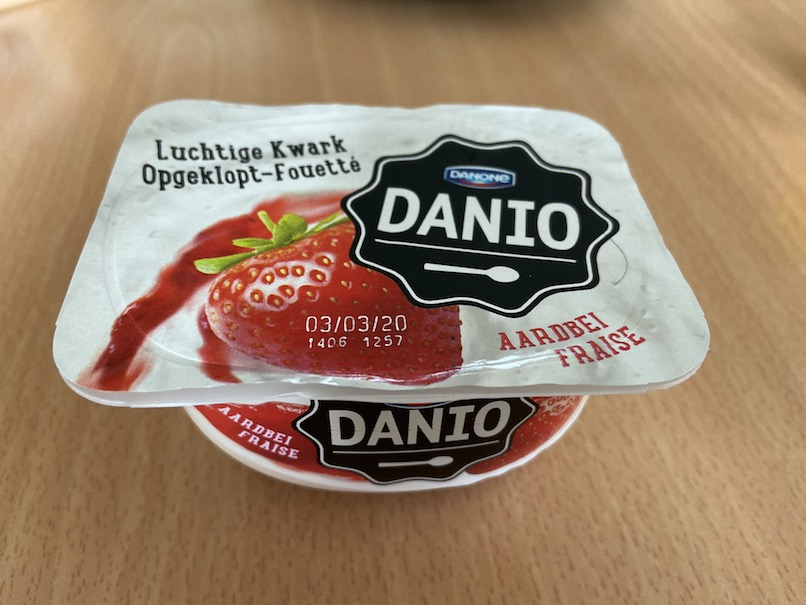
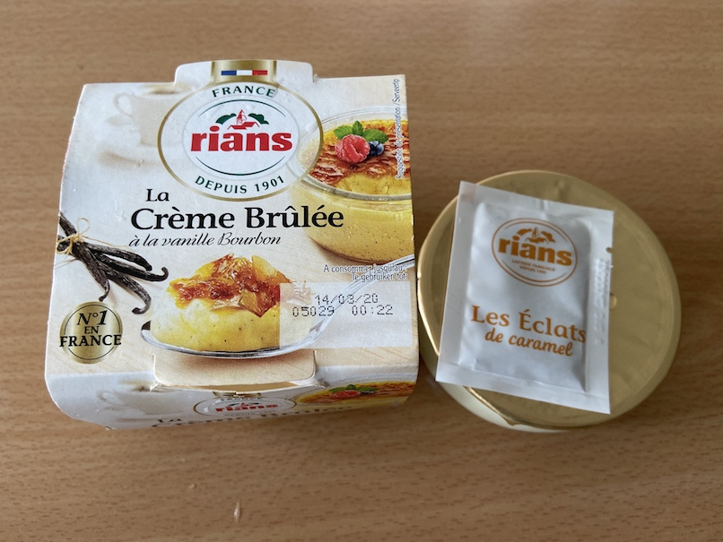
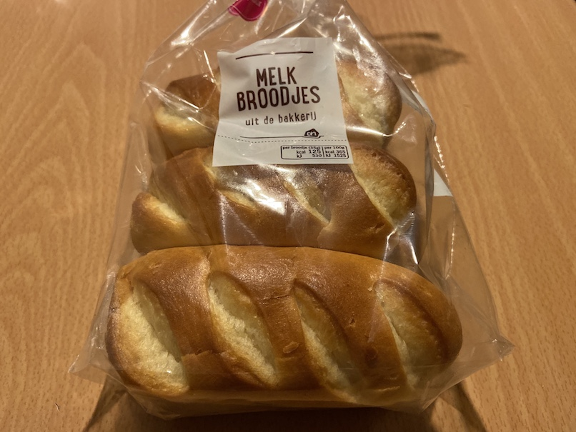
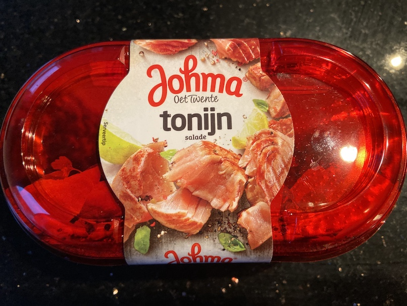
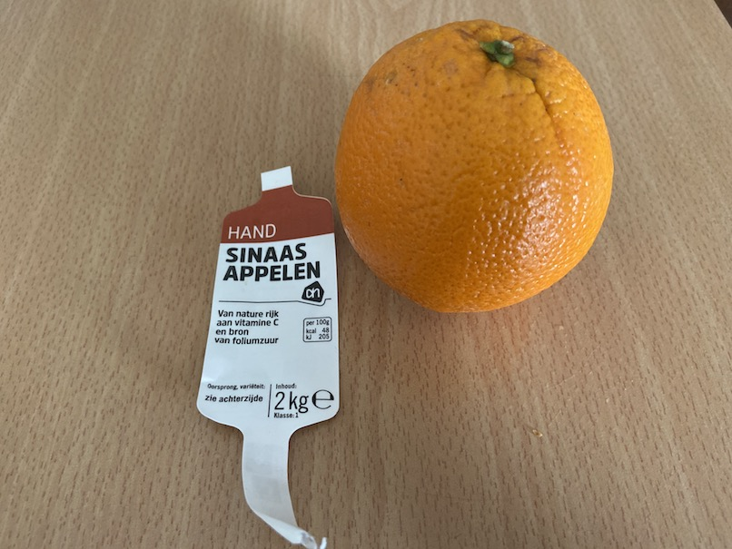

0%
甜點類
Danone Danio Luchtige Kwark Aardbei
- 名詞解釋
- Danone: 公司
- Danio: 品牌
- Luchtige: 空氣的 (airy)
- Kwark: 茅屋起司 (cottage cheese)
- Aardbeien: 草莓 (strawberries)
- 日期: 2020.02.07
- 地點: AH
- 價格: 平均一盒 €0.595 (兩小盒 €1.19, 不算當日打折)
- 心得: 草莓優格, 很好吃
- 
Rians Crème brûlée
- 名詞解釋
- Crème brûlée (法文): Creme brulee
- 日期: 2020.02.21
- 地點: AH
- 價格: €2.25
- 備註:
- 
麵包
Melkbroodjes
- 名詞解釋
- Melk: Milk
- Broodjes: Sandwiches
- 地點: AH
- 價格: €1.79
- 備註:
- 內有十個 (35 gram * 10)
- 牛奶麵包
- 可以放三個禮拜
- 口感鬆軟
- 
醬
Johma Tonijnsalade
- 名詞解釋
- Johma: 公司
- Tonijn: Tuna (鮪魚)
- Salade: Salad
- 日期: 2020.02.07
- 地點: AH
- 價格: €2.39
- 備註:
- 
水果
柳橙
- 日期: 2020.03.13
- 地點: AH
- 價格: € 2.99
- 備註:
- 2 kg, 約 11 顆
- 西班牙產
- 好吃, 比台灣甜很多
- 
比價
雞蛋
- LiDL 紙盒裝 12 顆雞蛋, € 1.95
- 一顆 € 0.1626
- 收據上會打
Scharreleieren 12st.
- AH 紙盒裝 18 顆雞蛋, € 3.79
柳橙汁